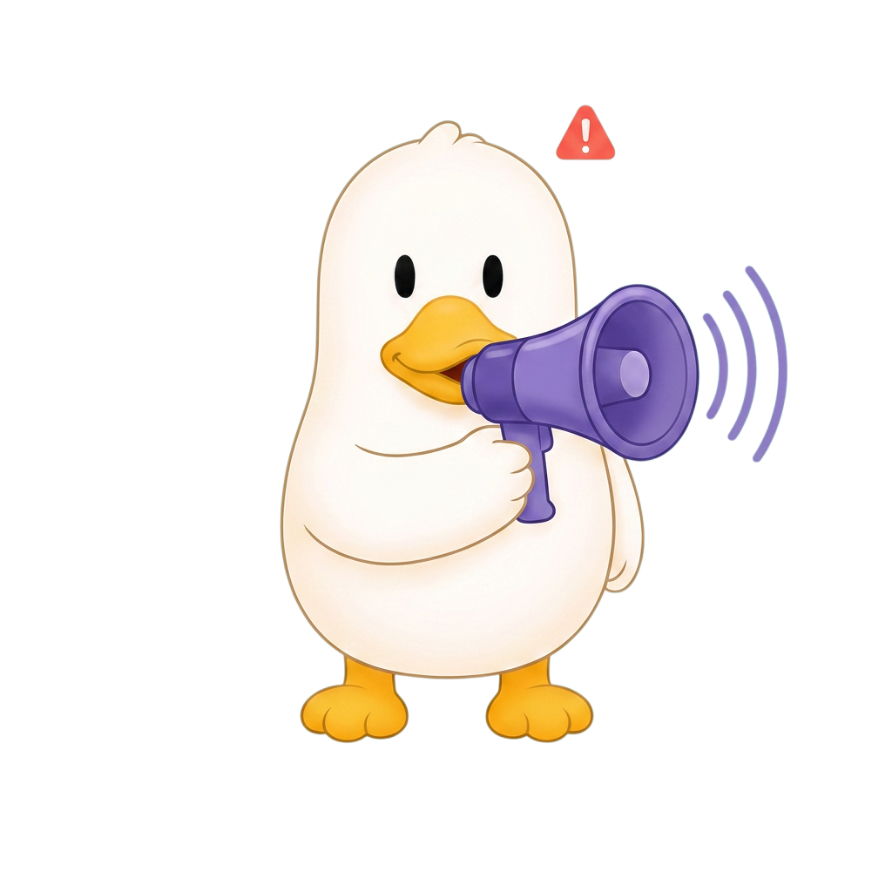
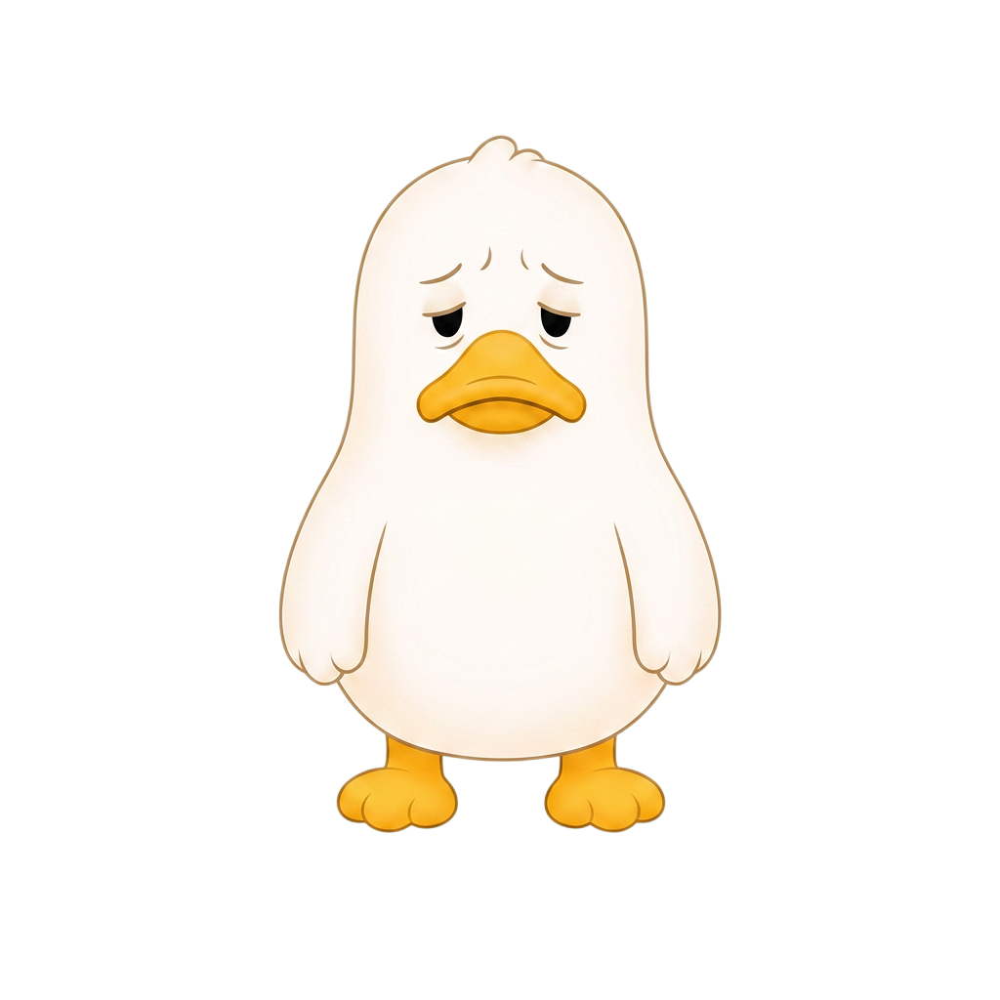
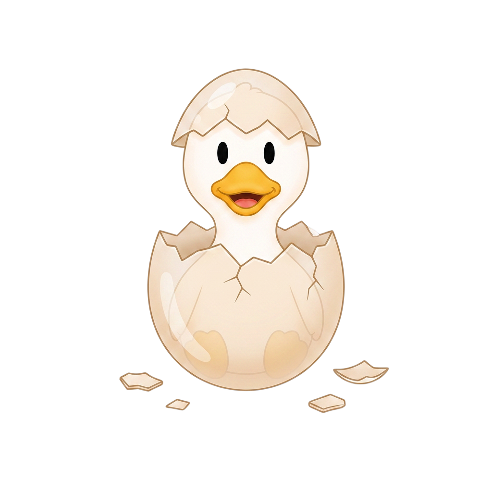
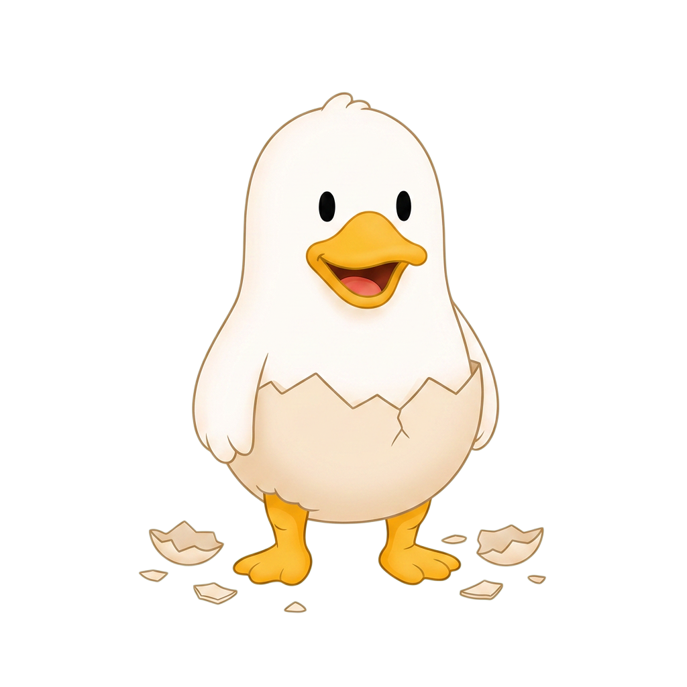
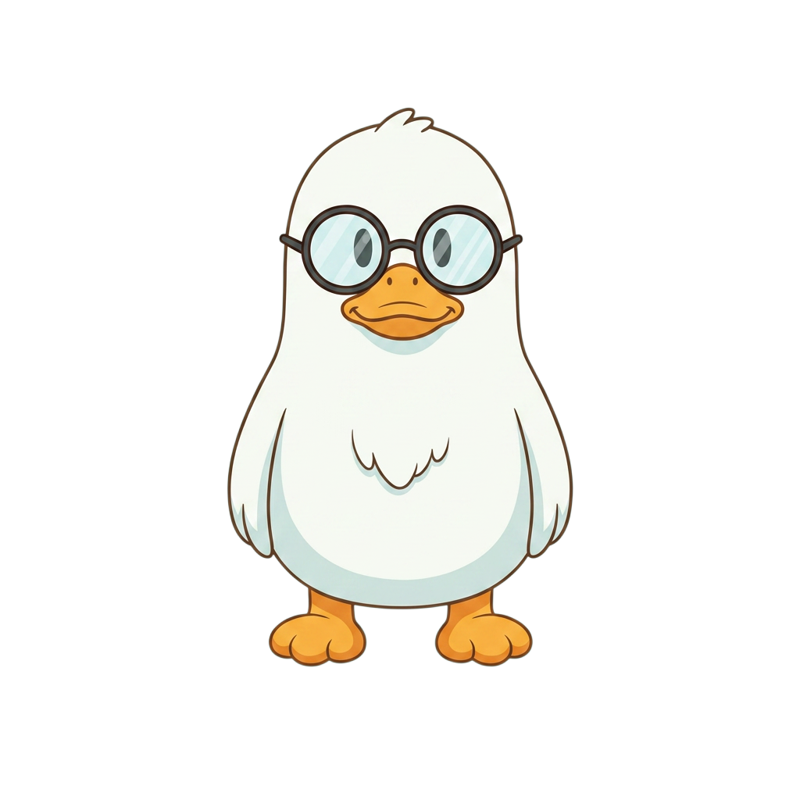
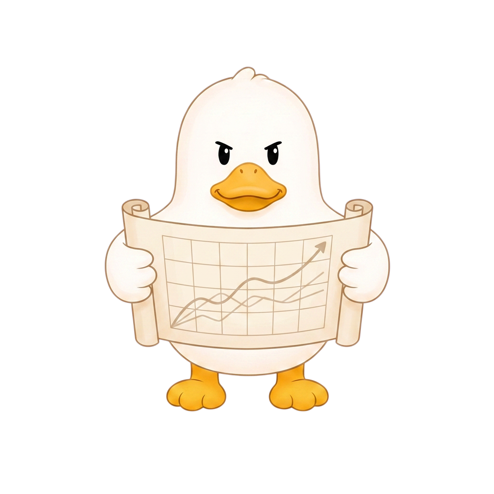
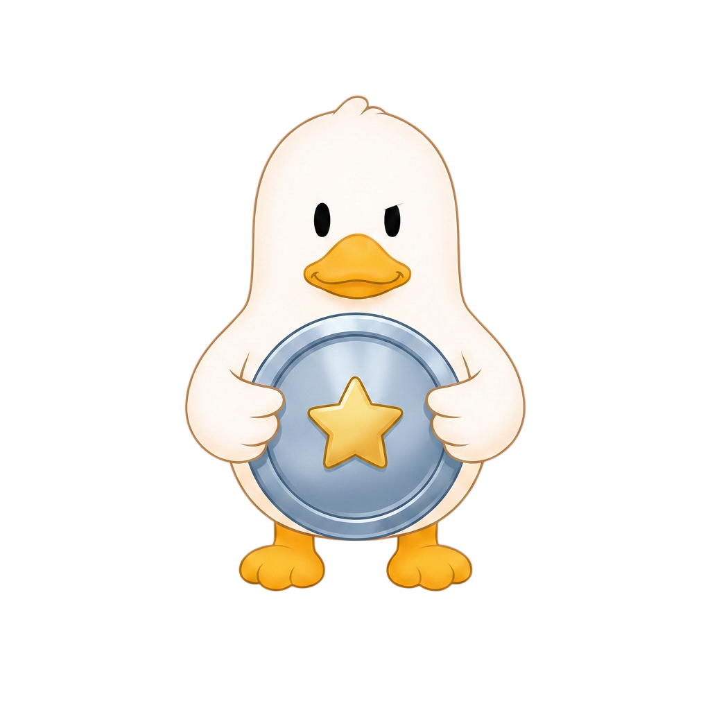
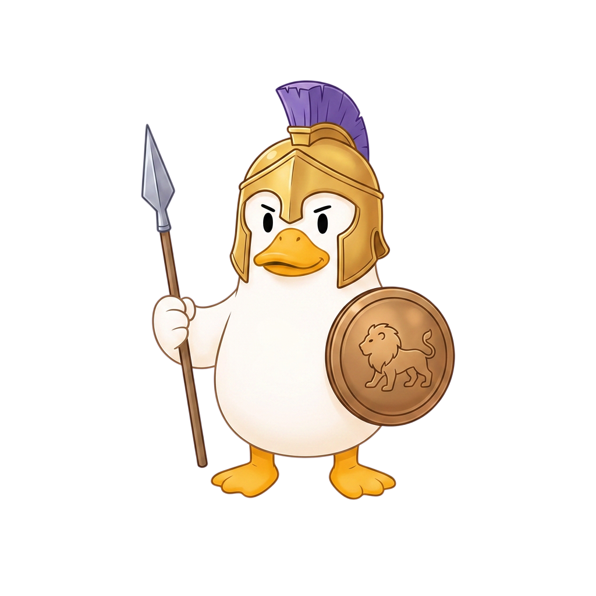

Cuak — Tu compañero financiero emocional
Most people feel their credit is fine — until suddenly it isn't. Cuak is a fintech mascot that reacts to credit health in real time, replacing financial anxiety with actionable clarity before the crisis happens.
Most people feel their credit is fine — until suddenly it isn't
Bank dashboards show numbers — balance, limit, due date — but never answer the real question: am I okay? That uncertainty creates anxiety instead of action. Cuak makes the warning visible before it becomes a crisis.
El resultado: angustia silenciosa, comportamientos reactivos (pagar solo el mínimo por miedo) y desconexión total con el producto financiero.
● El problema
Los apps bancarios son técnicamente correctos pero emocionalmente fríos. El usuario sabe cuánto debe, pero no sabe si está en una buena o mala posición — y esa incertidumbre genera ansiedad en lugar de acción.
● La oportunidad
Diseñar una capa emocional sobre los datos financieros. Una mascota que actúa como señal de alerta — no un número abstracto, sino un estado visible e inmediato que el usuario puede leer en segundos.
Una mascota que reacciona a tu comportamiento financiero
Cuak conecta con los datos de tarjeta de crédito vía Open Banking (Belvo) y mapea el comportamiento del usuario a uno de cuatro estados emocionales. El estado de la mascota es la interfaz principal — no un resumen al fondo de un dashboard.
Tres pantallas core diseñadas y funcionando:
Home
Estado actual de la mascota + resumen del ciclo. El usuario entiende su situación en menos de 3 segundos.
Progreso
Historial de comportamiento financiero. Tendencias visibles, no tablas de datos crudos.
Más
Configuración, conexión de cuentas (manual o Belvo), alertas y preferencias de notificación.
● Principio de diseño
El estado emocional no es decorativo — es la señal de alerta principal. Si Cuak está preocupado, el usuario lo siente antes de leer un número.
+ Calculadora de cuotas — implementada
Se abre desde la tarjeta frontal del mazo. El usuario ingresa monto y número de cuotas con un selector vertical deslizable. Calcula en tiempo real: cuota mensual, total pagado, interés total y tabla de amortización. Usa la tasa real de la tarjeta o estima según nivel de uso. Bloquea el cálculo si el monto supera el disponible. La animación de entrada usa Reanimated — se revela debajo del mazo sin interrumpir el gesto.
+ Card deck con gesture animations
El mazo de tarjetas usa react-native-gesture-handler + Reanimated en UI thread. El usuario desliza hacia abajo para cambiar la tarjeta frontal. Las animaciones corren fuera del JS thread — sin drops de frame durante gestos.
Cuatro estados. Una señal clara.
El sistema mapea el comportamiento financiero del usuario a cuatro estados emocionales. Cada estado tiene una expresión visual, un color y una acción sugerida — reduciendo la fricción cognitiva de interpretar datos financieros.



Esperando
Cuak te asesora antes de que gastes
Las apps bancarias te dicen lo que ya gastaste. Cuak te muestra lo que deberías hacer antes de tomar la decisión. El Simulador de Compras es la funcionalidad estrella del producto.
El usuario ingresa el monto de una compra futura — un televisor, un viaje. El motor de backend (cycle_service.py) analiza el ciclo de facturación y responde con la estrategia óptima.
● Si compras hoy
21 días libres de interés
Cuak está feliz. La compra entra dentro del ciclo actual y tienes tiempo suficiente para pagar sin costo.
● Si compras mañana
50 días libres de interés
Un día después del corte = nuevo ciclo completo. Cuak te lo advierte antes de cometer el error.
● El loop conductual
Si el usuario toma la decisión inteligente, Cuak lo recompensa al instante. Si intenta sobregirarse, Cuak cambia a estado Alerta antes de que cometa el error — convirtiendo la restricción en una señal visible y no en un número abstracto.
De Aprendiz a Maestro Crediticio
Las buenas decisiones financieras generan Puntos de Experiencia (XP). Este refuerzo positivo convierte el pago de deudas de una tarea estresante a una experiencia gratificante — el mismo mecanismo que hace que Duolingo tenga 40M de usuarios activos diarios.
+20 XP — Saldo bajo
Mantener el uso del crédito por debajo del 30% del límite disponible.
+50 XP — Pago a tiempo
Pagar antes de la fecha límite, sin importar el monto.
+100 XP — Decisión óptima
Usar el Simulador y elegir la estrategia recomendada por Cuak.






Behavioral Scoring y Lead Generation B2B
Cuak le da la vuelta al modelo bancario tradicional. En lugar de cobrarle al usuario por sus errores financieros, Cuak cobra a los bancos por sus mejores clientes.
B2C — Freemium
$9.99 / mes
Plan premium con simulaciones ilimitadas, análisis de múltiples tarjetas y alertas proactivas avanzadas. El plan gratuito incluye 1 tarjeta y 3 simulaciones mensuales.
● B2B — El negocio real
Al rastrear la disciplina diaria del usuario a través de la gamificación, Cuak crea un Behavioral Score. Un usuario en nivel "Maestro Crediticio" con Cuak feliz constante es el cliente de riesgo cero que los bancos buscan activamente.
Modelo CPA: Los bancos pagan comisión por adquisición por cada lead pre-calificado conductualmente. La IA interna recomienda productos financieros de mayor nivel en el momento exacto de madurez del usuario.
Proyecciones basadas en diseño conductual
Proyecto 0 to 1 — sin usuarios reales aún. Ningún producto fintech existente usa una mascota como señal emocional primaria de datos financieros: Nequi y Greenlight tienen UX amigable, pero sin capa emocional reactiva. Duolingo validó que el antropomorfismo genera retención — Cuak aplica ese mecanismo a finanzas personales por primera vez. Las proyecciones parten de esa brecha.
What prototype testing revealed
5 testers. 1 clickable prototype. 1 session each. The emotional hook worked immediately.
5 / 5
Reported feeling "more in control" after seeing their usage % with mascot feedback — vs. the same number shown without it.
3 / 5
Said the mascot made them want to check back — vs. "I'd open it once and forget it exists."
"It feels like the app is on my side, not judging me."
— Prototype tester, session 3
Small sample. Real signal. The emotional hook works — the infrastructure is catching up.
Construido para escalar con Open Banking
El stack fue elegido para soportar la integración futura con datos bancarios. Actualmente, el MVP utiliza un motor de cálculo de backend propio y datos simulados (mock data) para validar la experiencia de usuario y el diseño conductual. La arquitectura está lista para reemplazar estos mocks por la conexión real en la siguiente fase.
useSharedValue, withSpring)
BelvoWidget integrado en mobile
En fase Sandbox
Del MVP a la Integración Productiva
El sistema de estados emocionales está diseñado y el flujo central del simulador está funcionando de manera aislada. Los siguientes pasos estratégicos son:
Building a fintech product that needs to feel human?
The emotional system behind Cuak can adapt to any financial or complex-data product. Let's talk.
→ josealvarezswork@gmail.com